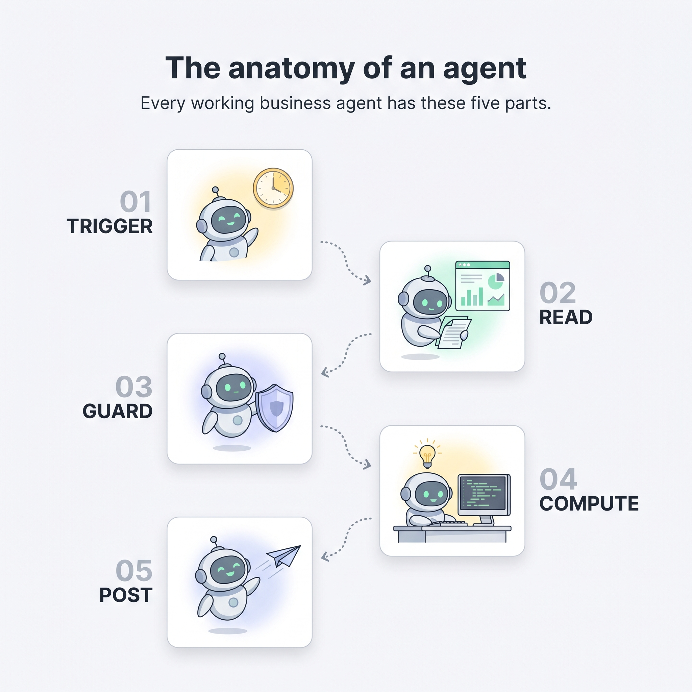
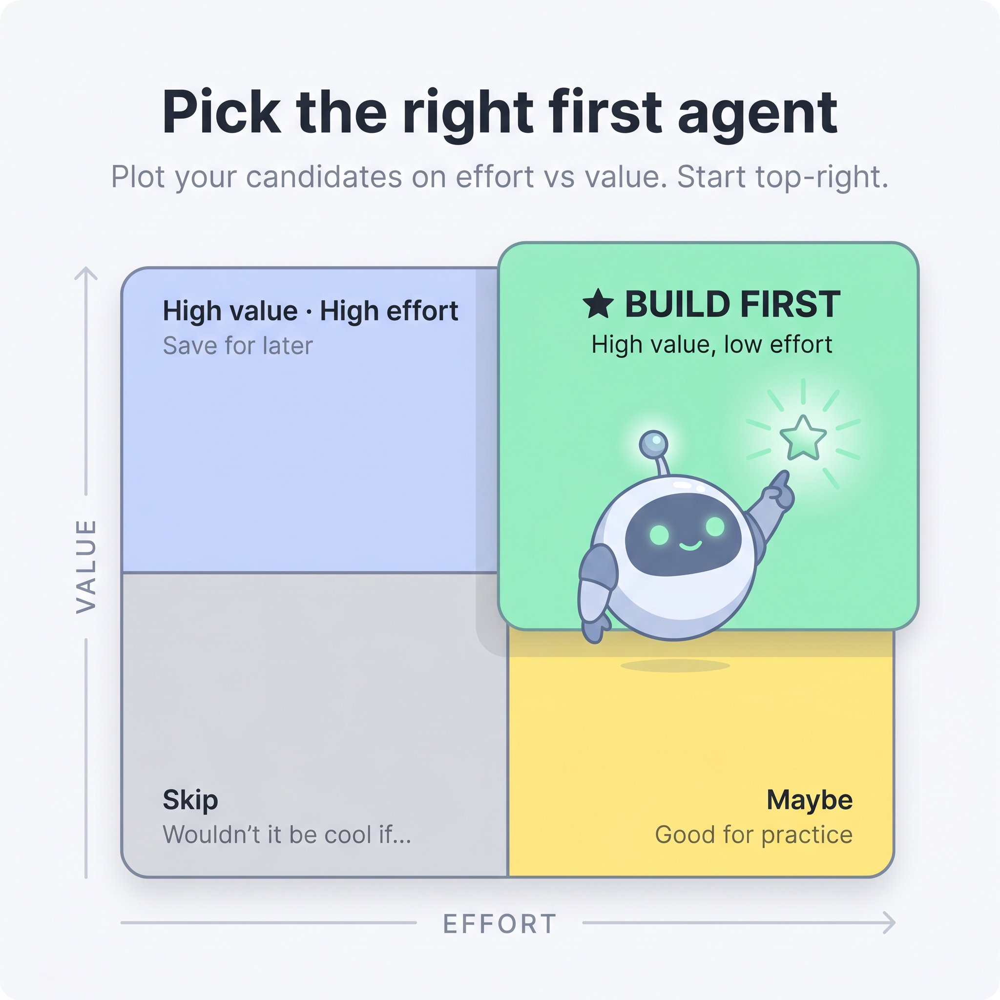
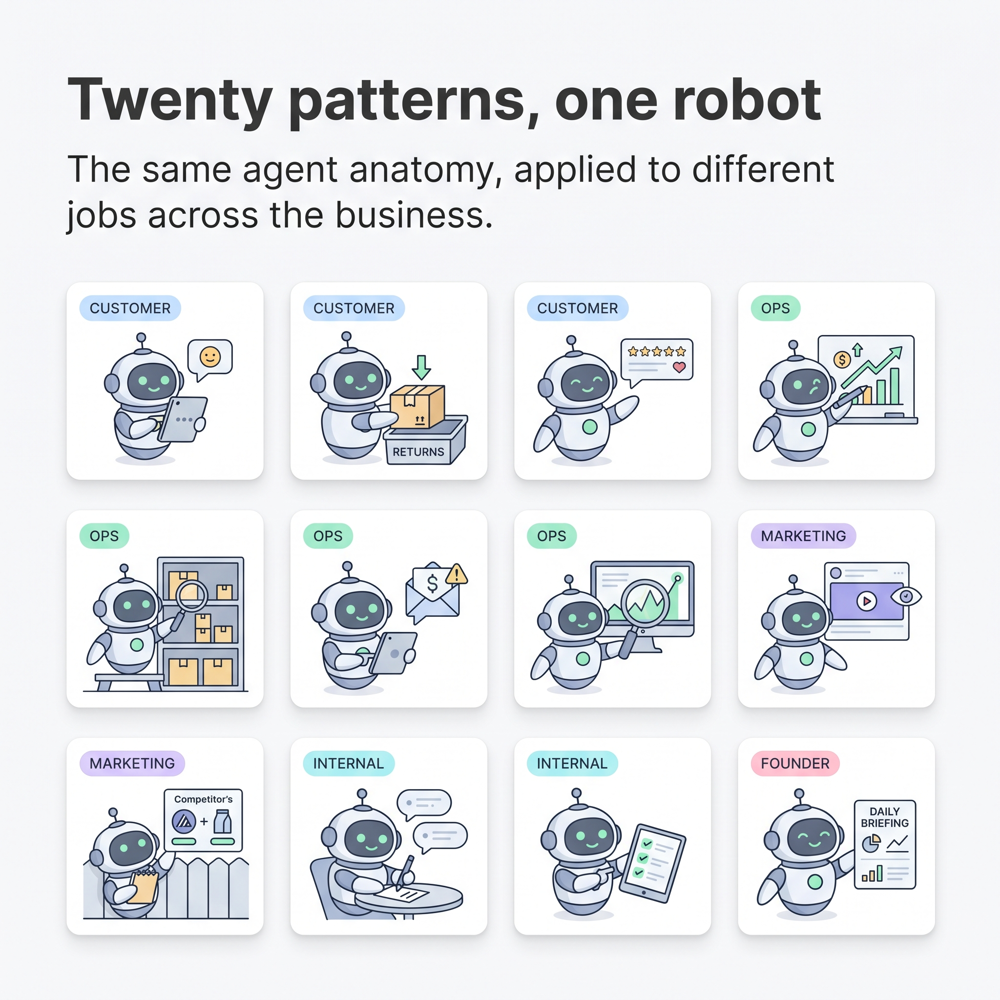
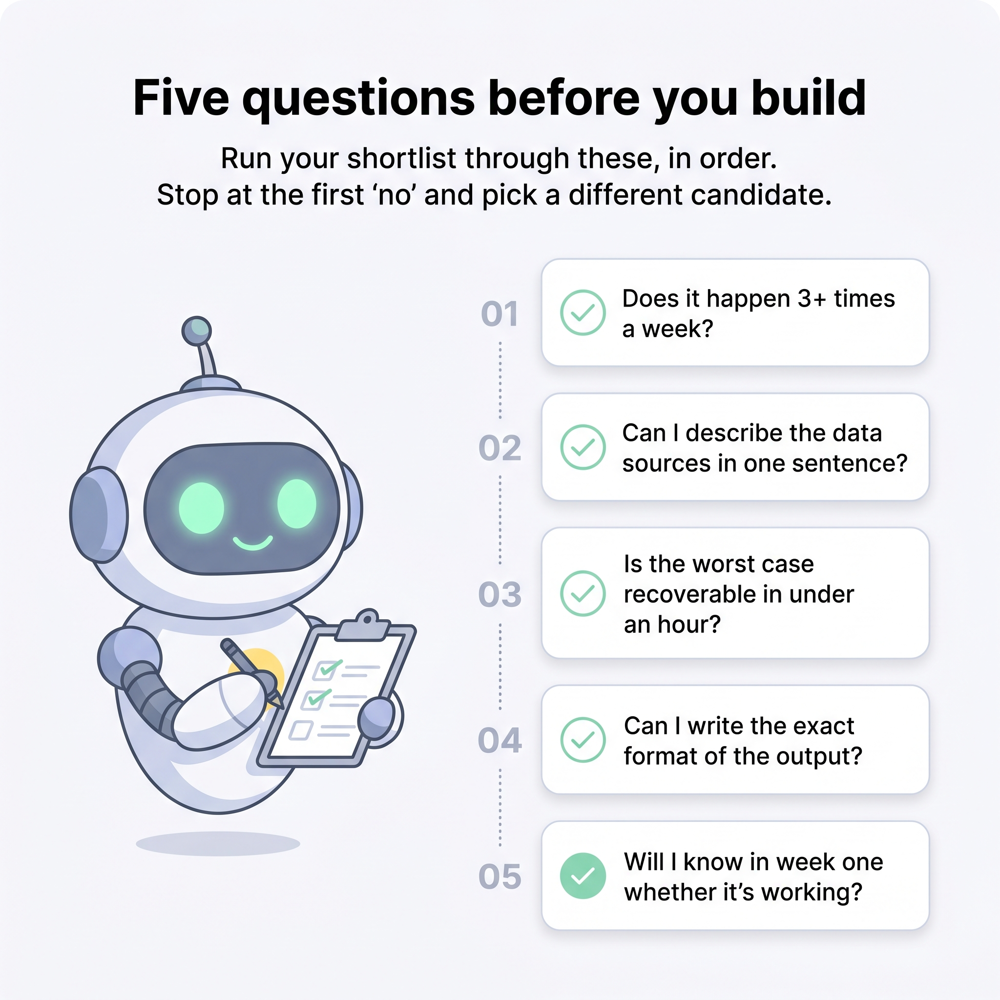
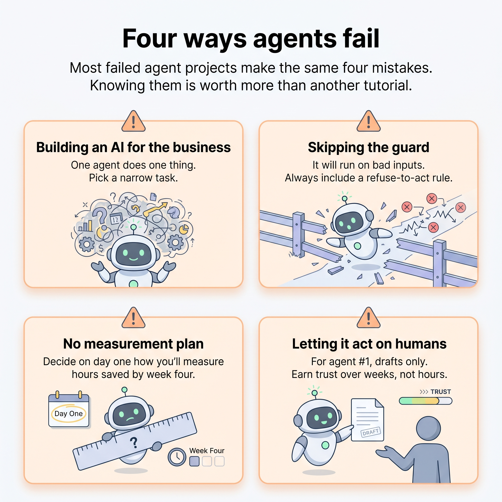

Support ticket triage
Read every new ticket, route it by topic, and draft replies to the easy ones.
Inbox→Agent→Drafts
What they are, how they work, what they actually look like in production, and how to pick the one you should build first. Skim the pictures. Read the parts that catch you.
Strip the marketing language away and every working business agent has the same five parts. If you can describe these five things for one of your own tasks, you have an agent spec.

Most projects fail because the first agent was the wrong agent. Plot your candidates on effort vs value and start in the top-right quadrant.

It happens at least daily and the answer is roughly similar each time.
The inputs already live somewhere accessible. Don't fix data pipelines and build agents in the same project.
A wrong output causes embarrassment, not financial or legal harm.
You can count the hours per week it saves, in numbers, by the end of month one.
The same five-part shape, applied to the jobs that actually move the needle in a small business. Pick the row that sounds most like your week.

Read every new ticket, route it by topic, and draft replies to the easy ones.
Sort returns by reason, flag the suspicious ones, surface trends to the buyer.
Watch reviews, draft a calm reply to negatives, summarise themes weekly.
Yesterday's numbers, vs last year, with one clear sentence on why.
Spot SKUs about to stock out, surface a tight shortlist to purchasing.
Draft polite reminders for overdue invoices on a quiet schedule.
Notice when a number drifts outside its normal band, name it in plain English.
Watch ROAS and spend, flag the campaigns that drifted overnight.
Notice price, copy, and PDP changes on a curated list of rivals.
Turn a transcript into a short shared note: decisions, owners, deadlines.
Pre-flight check a document against a policy and flag the gaps.
One short morning note: yesterday's numbers, today's calendar, this week's risks.
Run your shortlist through these, in order. Stop at the first "no" and pick a different candidate.

If no → reconsider. The win compounds with frequency. Once-a-month tasks rarely justify the build.
If no → the data isn't ready. Fix the data plumbing first as its own project, then come back.
If no → skip for the first agent. Build something where embarrassment is the worst case.
If no → you're not ready. If you can't describe the output in detail, you don't know the task well enough to delegate it.
If no → measure first, build later. Most agent failures are actually measurement failures.
The same four mistakes account for most failed agent projects. Knowing them up front is worth more than another tutorial.

One agent does one thing. The owner who tries to build a single intelligent assistant that does everything ships nothing. Pick a narrow, scheduled, boring task first.
The agent will run on a day when its inputs are missing or wrong. Without a guard it will publish garbage with full confidence. Always include "refuse to act if X is missing".
"It feels useful" is not a result. Decide on day one how you'll measure hours saved or money moved by week four. Write it down before you start.
For agent #1, the agent always drafts and a human always approves. The day you let it auto-send is the day it embarrasses you. Earn the trust over weeks, not hours.
A working agent is a scheduled task with a clear input, a guard, and one output channel.
Everything else is decoration. If you can describe one of those for your business by tonight, you're closer to shipping than 90% of operators talking about AI.